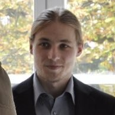
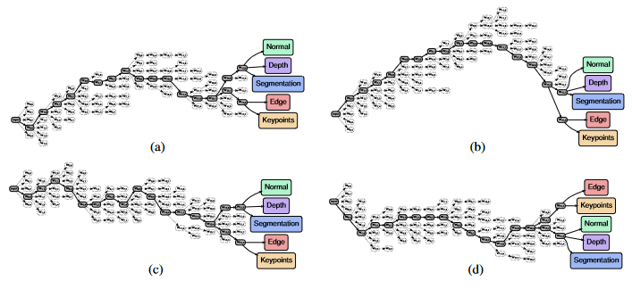
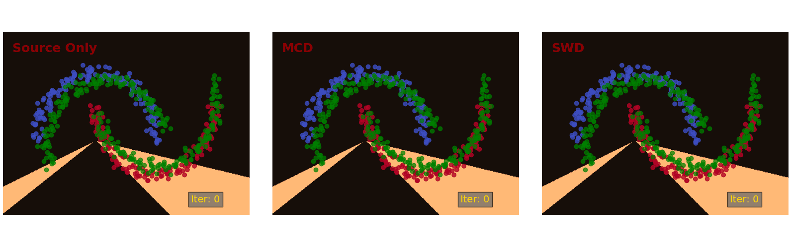

About Me
Senior Research and Engineering Manager, Technologist at Apple pushing the state-of-the-art of 3D Computer Vision and Machine Learning algorithms in the field of real-time on-device perception and reasoning technologies.
Former Research Engineer at metaio, a pioneer in the field of Augmented Reality, working on core technologies like Simultaneous Localization and Mapping (SLAM), Robust Pose Esimation, Marker / Markerless Tracking and 3D Reconstruction. Experienced in developing and optimizing algorithms for computationally and memory restricted embedded devices.
My research interests include 3D Computer Vision, Machine Learning, Robotics and Computer Graphics
Former Research Engineer at metaio, a pioneer in the field of Augmented Reality, working on core technologies like Simultaneous Localization and Mapping (SLAM), Robust Pose Esimation, Marker / Markerless Tracking and 3D Reconstruction. Experienced in developing and optimizing algorithms for computationally and memory restricted embedded devices.
My research interests include 3D Computer Vision, Machine Learning, Robotics and Computer Graphics
CV
Leading the Realtime Semantic Understanding efforts inside the Video Computer Vision org, a centralized applied research and engineering organization responsible for developing real-time on-device Computer Vision and Machine Learning perception and reasoning technologies across Apple products. Our org is focused on extracting low-level semantic information from real-time video streams and building higher level reasoning algorithms. Example technologies we contributed to ARKit are Semantic Segmentation (People and Planes), Scene Classification, Monocular Depth Estimation.
Check out some of our work:
ARKit v3.5: https://developer.apple.com/videos/play/tech-talks/609/
ARKit v3: https://developer.apple.com/videos/play/wwdc2019/604/
Check out some of our work:
ARKit v3.5: https://developer.apple.com/videos/play/tech-talks/609/
- Semantic Classification of non-planar surfaces: ~2:42
ARKit v3: https://developer.apple.com/videos/play/wwdc2019/604/
- People Occlusion: ~5:08
- Motion Capture: ~15:33
- ML-supported plane estimation: ~41:12
Recent Publications
 |
Fast and Explicit Neural View SynthesisPengsheng Guo, Miguel Angel Bautista, Alex Colburn, Liang Yang, Daniel Ulbricht, Joshua M. Susskind, and Qi ShanPaper |
|  |
Learning to Branch for Multi-Task LearningPengsheng Guo, Chen-Yu Lee, and Daniel UlbrichtICML 2020 / Paper |
|  |
Sliced Wasserstein Discrepancy for Unsupervised Domain AdaptationChen-Yu Lee, Tanmay Batra, Mohammad Haris Baig, and Daniel UlbrichtCVPR 2019 / Paper / Code / ML Journal |
Book Chapter
Handbook of Augmented Reality - Evolution of a Tracking System
Sebastian Lieberknecht, Quintus Stierstorfer, Georg Kuschk, Daniel Ulbricht, Marion Langer, Selim BenhimaneSpringer Link